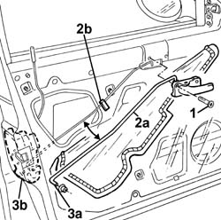

7005C54 front side door internal opening return mechanism (with handle) - r r for repair or replace with different version
- Path
- Procedures > 70 FITTINGS > 7005 PASSENGER COMPARTMENT FRONT SIDE DOORS > 7005C front lock controls > 7005C54 front side door internal opening return mechanism (with handle) - r r for repair or replace with different version
- Kind
- repair procedure (removal / refitting; the operation number is the code)
- Applies to
- all engines; all production periods
- Interactive page
- https://sloeber94.github.io/elrnDB-a156/en/#/3238582
Applies to: all engines; all production periods
 Removing
Removing
 Refitting
Refitting7005A04 front side door water guard protection - r r or replace with door panel removed
1. Undo the bolts.
2. Disconnect the rod (2a) from the guide spring (2b).
3. Disconnect the rod (3a) from the lock (3b) and save it together with the inner handle.

Applies to: all engines; all production periods
Refitting
RemovingCheck that the rod and the handle are not damaged.
Replace the rod retaining bush and connect the rod to the lock.
Connect the rod to the guide spring.
Fit the handle and tighten the bolt.
7005A04 front side door water guard protection - r r or replace with door panel removed
Test to check the interior handle and catch are working properly.
Topics linked from this page (1)
Topics that link to this page (6)
- 7005C50 front side door interior opening mechnism r-r for repair or replacement with door panel removed
- 7005C51 front side door inner catch device - r+r for repair or replacement
- 7005C55 front side door interior opening return device (with handle) - r+r for repair or replacement
- 7005N20 front side door lock motor/catch assembly - rr with door panel and support frame removed
- 7005N21 front side door lock motor-lock assembley-r r
- 7205E36 Stripping FRONT SIDE DOOR